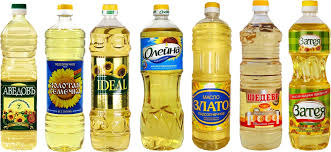

Такая простая на первый взгляд вещь, как растительное масло, может испортить не только вкус вашего любимого блюда, но и заметно изменить настроение, причем не в лучшую сторону. Чтобы этого не произошло, стоит соблюдать некоторые нехитрые правила и, уж поверьте, ваши внимание и терпение будут вознаграждены.
Наш первый совет не будет касаться индивидуальных качеств приобретаемого вами товара, тем не менее, не упускайте его из вида. Делая любую покупку, обратите внимание на продавца, точнее на то, в каком санитарном состоянии у него находится товар, прилавок, да и он сам.
Отдавайте предпочтение расфасованным, упакованным продуктам, а в случае с растительным маслом — бутылированной продукции. Если есть возможность, всегда делайте покупки в закрытых помещениях — магазинах или крытых рынках. Однако именно растительные масла чаще всего приходится приобретать на улице или уличном рынке прямо из бочки, поскольку там выбор больше, да и цена меньше. В таком случае не поленитесь лишний раз пройтись и посмотреть, у какого продавца самое чистое и аккуратное рабочее место.
Поскольку существует множество видов растительного масла, легко растеряться при его покупке. Основное различие между ними определяется содержанием ненасыщенных жирных кислот, необходимых для организма. Для заправки салатов из сырых или вареных овощей лучше использовать соевое масло (содержание ненасыщенных жирных кислот в нем около 60 %). Хорошо оно также подходит для кратковременного поджаривания, например яичницы. Соевое масло незаменимо при приготовлении соусов для мяса и рыбы.
Ненасыщенных жирных кислот в арахисовом масле вдвое меньше, однако оно приятнее на вкус, поэтому подходит как для употребления в сыром виде, так и для добавки в тесто или при поджаривании.
Аллергикам советуем готовить на рапсовом масле — в нем отсутствуют синтетические добавки, поскольку оно консервируется естественным путем. Оно используется как для поджаривания, тушения, выпечки, так и для заправки любых салатов, приготовления различных соусов.
Лучшим из растительных жиров по праву считается оливковое масло, благодаря высокому содержанию ненасыщенных жирных кислот и наличию в нем жизненно важных элементов. Однако при всех его достоинствах оливковое масло отличается достаточно высокой ценой.
Определившись с видом масла, вам придется сделать еще один выбор. Напомним, что, как и всякий продукт, масло может быть отечественного и импортного производства. Если вы не являетесь ярым поклонником исключительно отечественных товаров и состояние кошелька позволяет не заострять внимание только на цене, советуем приобрести «заморский» товар.
Разочароваться в нем вряд ли придется: отсутствие неприятного запаха, странного привкуса и прочих фокусов, которые можно ожидать от нашего масла, гарантирует качество будущего блюда. Подобный продукт прекрасно подходит для приготовления самых различных яств, поскольку в основном его состав представляет собой смесь масла из различных культур. В случае, если вы никак не определитесь с выбором предстоящего блюда, это будет самым лучшим решением. Однако при необходимости можно легко найти масло импортного производства из одной культуры.
Кроме того, симпатичная пластиковая бутыль избавит вас от хлопот по поиску тары, пакета и вечного страха посадить неотстирывающееся пятно, не говоря уже о преимуществах только санитарно-гигиенического характера. У бутылированного масла есть еще одно преимущество: всегда можно посмотреть, не истек ли срок годности.
При покупке любого продукта, в том числе и растительного масла, не забудьте обратить внимание на его состав: возможно, в нем содержится вещество, которое может вызвать у вас аллергическую реакцию; в особенности это касается импортных масел. Если вы сидите на диете, почитайте этикетку: масла из разных культур различаются по калорийности.
Определенного рода проблемы могут возникнуть с отечественным растительным маслом, продающимся на разлив. На что ориентироваться при их покупке?
Самый простой способ проверить качество масла — посмотреть его на свет. И если вы заметили осадок, тем более темного цвета, лучше купить масло в другом месте. Но зачастую осадок выпадает лишь после того, как масло немного постоит, а витринный экземпляр только что налит. В таком случае догадаться о его появлении можно опять-таки по внешнему виду — оно будет мутным; хорошее масло должно быть прозрачным. Кроме того, обратите внимание на цвет продукта — как правило, чем он светлее, тем лучше (если только вы выбираете масло из одной и той же культуры, поскольку масла из разных культур отличаются по цвету). Не забудьте, что подсолнечное масло из жареных семечек имеют более темную окраску, чем из нежареных.
Самое распространенное растительное масло — подсолнечное. Как правило, его-то и приходится покупать хозяйкам, тем более что подсолнечное масло используется для приготовления как первых, так и вторых блюд, прекрасно подходит и для жарки, и для заправки салатов, применяется и в выпечке.
Однако этот замечательный продукт становится сплошным наказанием, когда изготовлен из недоброкачественного сырья — если даже хоть небольшая часть семян подсолнечника успеет подпортиться, масло из него будет горчить. Более того, даже выжатое из хороших семечек, но долго стоявшее, тем более в теплом месте, масло будет иметь все тот же горьковатый вкус. Так что перед тем как сделать покупку, обязательно попробуйте; не смотря на то что цвет масла не вызывает никаких подозрений, оно может быть горьким. Кроме того, подсолнечное масло также может горчить, если оно изготовлено из пережаренных семечек.
Не постесняйтесь понюхать покупаемый вами товар: зачастую именно обоняние дает нам ту информацию, которую вряд ли предоставят другие органы чувств. Внешний вид, а порой даже и вкус покупаемого масла может нас обмануть, но неприятный запах вряд ли останется без внимания. К запаху масла, масличной культуры не должны примешиваться посторонние запахи; их наличие свидетельствует либо о несвежести данного продукта, либо о неправильном хранении, либо о наличии каких-то добавок, вполне возможно — даже непищевых. Зачастую неприятный запах масло приобретает, когда хранится в грязной или не приспособленной для хранения пищевых продуктов таре.
В том случае, если вы все-таки пренебрегли этим советом или просто забыли это сделать, а позже обнаружили странный запах, исходящий от вашего масла, стоит обратиться в лабораторию. Наверняка у вас нет желания этим заниматься, поэтому проявляйте бдительность вовремя, не рискуйте здоровьем!
Если вам приходится покупать данный продукт зимой, обратите внимание на следующее: масло ни в коем случае не должно замерзать! Так что если вдруг вы обнаружили, что содержимое бутыли помутнело, в ней появились кристаллики или, более того, она совсем замерзла, смело разворачивайтесь и уходите — это может быть что угодно, но только не растительное масло! Вполне возможно, предлагаемое вам вещество действительно растительное масло, но в нем либо содержатся какие-то примеси или добавки, либо просто оно разбавлено. Покупать такое масло не стоит, даже если очень соблазняет цена.
Итак, масло выбрано, и если при его покупке вы воспользуетесь нашими советами, то наверняка сможете порадовать себя и своих близких отменным вкусом и неповторимым ароматом любимых блюд.